<div class="middle center"> <div style="width: 100%"> # AOSP的移植实践与挑战 <hr/> 龙芯实验室 [朱奇正](https://github.com/baibaidashixiong) <div style="text-align: right; margin-top: 1em;"> <p>2025.3.29 </p> </div> </div> </div> <!--s--> <div class="middle center"> <div style="width: 100%"> # 目录 <hr/> 1. AOSP总体概述<br> 2. AOSP移植难点<br> 3. AOSP移植实践<br> </div> </div> <!--s--> <div class="middle center"> <div style="width: 100%"> # Part.1 <hr/> AOSP总体概述 </div></div> <!--v--> ## 安卓历史 <div style="text-align: center;"> 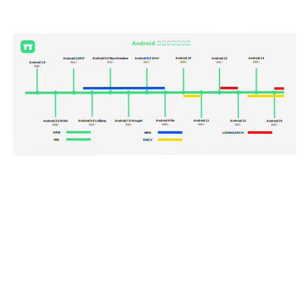 </div> <!--v--> ## 整体框架 <div class="mul-cols"> <div class="col"> <br/> <img src="android-stack.svg" width="100%" style="margin: 0 auto;"> </div> <div class="col"> <p style="color: red;">1. Linux Kernel</p> <p>2. System Services & Daemons</p> <p style="color: red;">3. HAL</p> <!--Hardware Abstraction Layer--> <p style="color: red;">4. Android Runtime</p> <p>5. System Services</p> <p>6. Android Framework</p> <p>7. ... </p> </div> </div> <!--v--> ## Linux Kernel - ACK(Android Common Kernel)：包含Linux LTS补丁。 - GKI(Generic Kernel Image)：减少内核碎片化。 <div style="text-align: center;"> <br/> 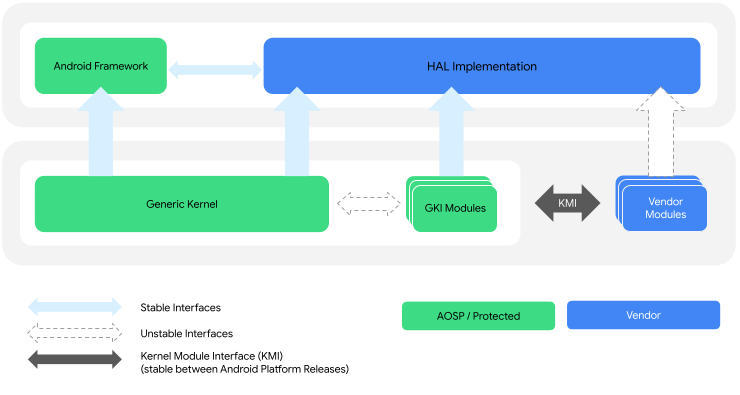 </div> <!--v--> ## HAL <span style="font-size: 0.8em;">📌 HAL: Hardware Abstraction Layer</span><p> <span style="font-size: 0.8em;">🛠️ 连接安卓系统和底层硬件驱动程序</span><p> ```c[1-3|5-11|13-19] // frameworks/native/libs/ui/Gralloc4.cpp using android::hardware::graphics::allocator::V4_0::IAllocator; using AidlIAllocator = ::aidl::android::hardware::graphics::allocator::IAllocator; // hardware/interfaces/graphics/allocator/4.0/IAllocator.hal interface IAllocator { allocate(BufferDescriptor descriptor, uint32_t count) generates (Error error, uint32_t stride, vec<handle> buffers); }; // external/minigbm/cros_gralloc/gralloc4/CrosGralloc4Allocator.cc Error CrosGralloc4Allocator::allocate(const BufferDescriptorInfo& descriptor, uint32_t* outStride, hidl_handle* outHandle) { ... int ret = mDriver->allocate(&crosDescriptor, &handle); ... } ``` <!--v--> ## Native Libraries <div class="mul-cols"> <div class="col"> <span style="font-size: 0.8em;">📌 Bionic: Android's libc</span><p> <span style="font-size: 0.8em;">🎯 体积更小</span><p> <span style="font-size: 0.8em;">🎯 速度更快</span><p> <span style="font-size: 0.8em;">🎯 协议更宽松</span><p> <span style="font-size: 0.8em;">⭐ 上层世界的基石</span><p> <span style="font-size: 0.8em;">📌 C/C++ Libraries: 依赖NDK</span><p> <span style="font-size: 0.8em;">🎯 应用加速</span><p> <span style="font-size: 0.8em;">🎯 保密需求</span><p> <span style="font-size: 0.8em;">🔀 通过JNI交互</span><p> </div> <div class="col"> <img src="android-stack1.png" width="80%" style="margin: 0 auto;"> </div> <!--v--> ## Android Runtime <div class="mul-cols"> <div class="col"> 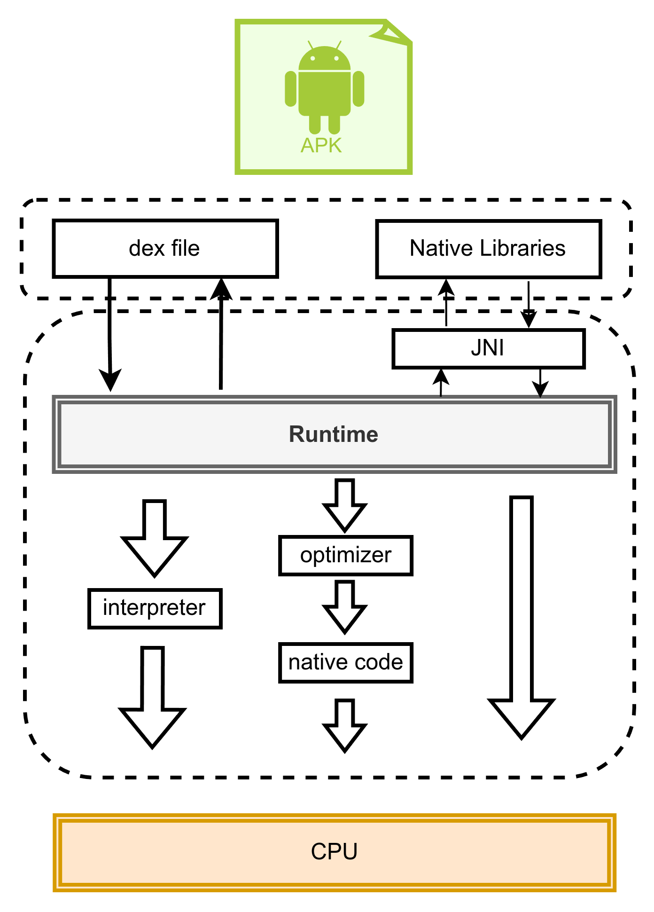 </div> <div class="col"> <span style="font-size: 0.8em;">📌 安卓APK</span><p> <span style="font-size: 0.6em;">📌 DEX文件</span><p> <span style="font-size: 0.6em;">📌 原生库</span><p> <span style="font-size: 0.8em;">📌 运行时支持</span><p> <span style="font-size: 0.6em;">🛠️ 各种trampoline</span><p> <span style="font-size: 0.6em;">🛠️ JNI调用</span><p> <span style="font-size: 0.6em;">🛠️ 解释器</span><p> <span style="font-size: 0.6em;">🛠️ JIT/AOT编译器</span><p> <span style="font-size: 0.6em;">📌 ...</span><p> </div> </div> <!--s--> <div class="middle center"> <div style="width: 100%"> # Part.2 <hr/> AOSP移植难点 </div> </div> <!--v--> ## 构建系统 <span style="font-size: 0.8em;">📌 AOSP构建系统演化</span><p> ```bash make(2008) Kati(2016) Soong(2017) Makefile ➡ Android.mk ➡ Android.bp Android.mk/Android.bp--> .ninja ``` <span style="font-size: 0.8em;">💡 OpenEmbedded与AOSP构建系统对比</span><p> <div class="three-line"> |OpenEmbedded | AOSP | |:--:|:--:| |bb recipe| Android.bp and Android.mk| |local.conf|AndroidProducts.mk| |machine.conf| BoardConfig.mk | |command: bitbake| soong (soong_ui and soong_build)| |bbclass | build/make/core && build/soong| </div> <!--v--> ## 构建系统 <span style="font-size: 0.8em;">🚀 构建命令: lunch <b>\<product_name\></b>-\<release_config\>-\<build_variant\></span><p> <div class="mul-cols"> <div class="col"> <span style="font-size: 0.8em;">🎯 寻找AndroidProducts.mk</span><p> ```C PRODUCT_NAME := loongson_3a5000 PRODUCT_CHARACTERISTICS := tablet ... ``` <span style="font-size: 0.8em;">🎯 BoardConfig.mk</span><p> ```C BOARD_RAMDISK_USE_LZ4 := true BOARD_CACHEIMAGE_FILE_SYSTEM_TYPE := ext4 BOARD_VENDORIMAGE_FILE_SYSTEM_TYPE := ext4 BOARD_AVB_ENABLE := false ... ``` </div> <div class="col"> <span style="font-size: 0.8em;">🎯 subdevs/graphics/graphics.mk</span><p> <div style="max-width: 600px; max-height: 200px;"> ```C PRODUCT_SOONG_NAMESPACES += external/mesa PRODUCT_PACKAGES += \ hwcomposer.drm \ hwcomposer.drm_minigbm \ gralloc.minigbm_dmabuf \ gralloc.minigbm \ gralloc.gbm \ libGLES_mesa \ libglapi \ libgallium_dri \ libOpenglSystemCommon \ vndservicemanager \ vndservice PRODUCT_PACKAGES += \ android.hardware.graphics.mapper@4.0-impl.minigbm \ android.hardware.graphics.allocator@2.0-impl \ android.hardware.graphics.allocator@4.0-service.minigbm \ android.hardware.graphics.composer@2.1-impl \ android.hardware.graphics.composer@2.1-service \ ``` </div> </div> </div> <!--v--> ## 工具链 <div class="mul-cols"> <div class="col"> <span style="font-size: 0.8em;">🎯 Clang工具链</span><p> <span style="font-size: 0.8em;">🎯 NDK</span><p> <span style="font-size: 0.8em;">🎯 Rust</span><p> </div> <div class="col"> <span style="font-size: 0.8em;">✅ 后端代码适配</span><p> <span style="font-size: 0.8em;">🛠️ BootStrap</span><p> <span style="font-size: 0.8em;">📌 Stage1</span><p> <span style="font-size: 0.8em;">🛠️ 编译最小Clang</span><p> <span style="font-size: 0.8em;">📌 Stage2</span><p> <span style="font-size: 0.8em;">🛠️ 制作动态库，完善clang</span><p> <span style="font-size: 0.8em;">📌 Stage3</span><p> <span style="font-size: 0.8em;">🛠️ 验证正确性</span><p> </div> <!--v--> ## 工具链 <div class="mul-cols"> <div class="col"> <span style="font-size: 0.8em;">📌 Stage1</span><p> <span style="font-size: 0.8em;">🎯 最小化的工具链</span><p> <br><br><br> <span style="font-size: 0.8em;">📌 Stage3</span><p> <span style="font-size: 0.8em;">🎯 验证正确性</span><p> <span style="font-size: 0.8em;">🎯 if stage2==out(stage2(source))</span><p> </div> <div class="col"> <span style="font-size: 0.8em;">📌 Stage2</span><p> <span style="font-size: 0.8em;">🎯 完善工具链</span><p> <span style="font-size: 0.8em;">🛠️ 依赖aosp内部库</span><p> <span style="font-size: 0.8em;">🛠️ libc.so</span><p> <span style="font-size: 0.8em;">🛠️ libaaudio.so</span><p> <span style="font-size: 0.8em;">🛠️ libGLESv2.so</span><p> <span style="font-size: 0.8em;">🛠️ ...</span><p> </div> <!--v--> ## 图形栈 <div class="mul-cols"> <div class="col"> <div style="text-align: center;"> 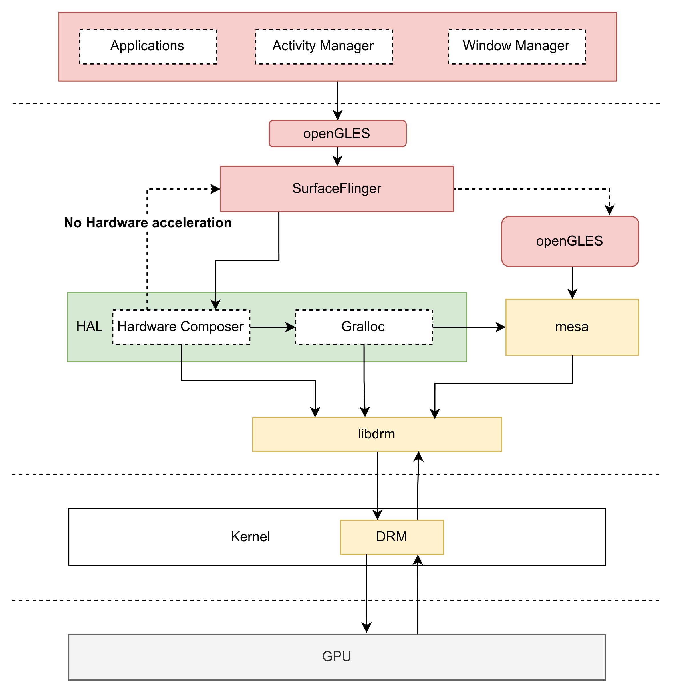 </div> </div> <div class="col"> <li style="font-size: 24px;margin-bottom: 24px;">SurfaceFlinger：类似 X11/Wayland</li> <li style="font-size: 24px;margin-bottom: 24px;">openGLES：渲染/软件3D合成</li> <li style="font-size: 24px;margin-bottom: 24px;">Hardware Composer：硬件渲染加速</li> <li style="font-size: 24px;margin-bottom: 24px;">gralloc：缓冲区分配</li> <li style="font-size: 24px;margin-bottom: 24px;">mesa：openGLES 的开源实现</li> <li style="font-size: 24px;margin-bottom: 24px;">libdrm：android的软件抽象层</li> </div> <!--v--> ## 安卓运行时 <span style="font-size: 0.8em;">💡 解释器：C++解释器/nterp汇编解释器</span><p> <div class="mul-cols"> <div class="col"> <div style="text-align: center;"> 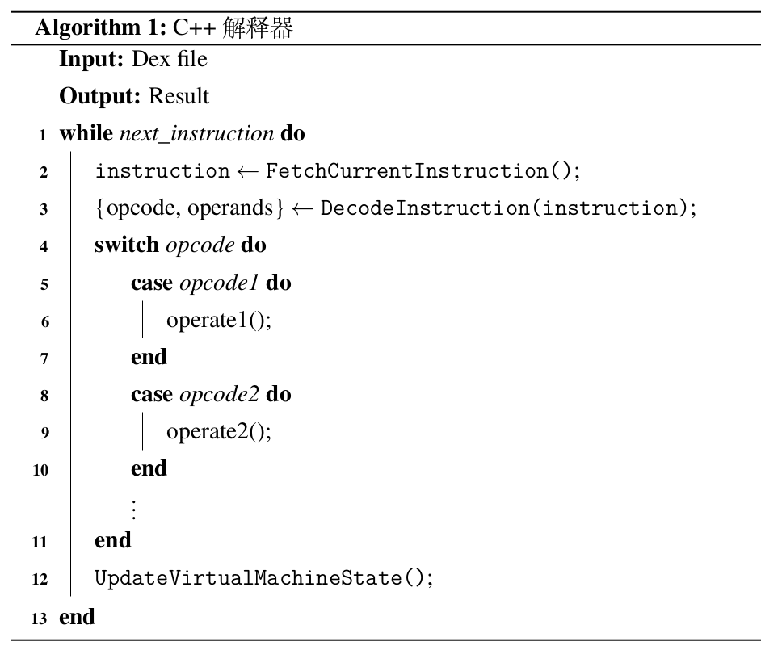 </div> </div> <div class="col"> <div style="text-align: center;"> 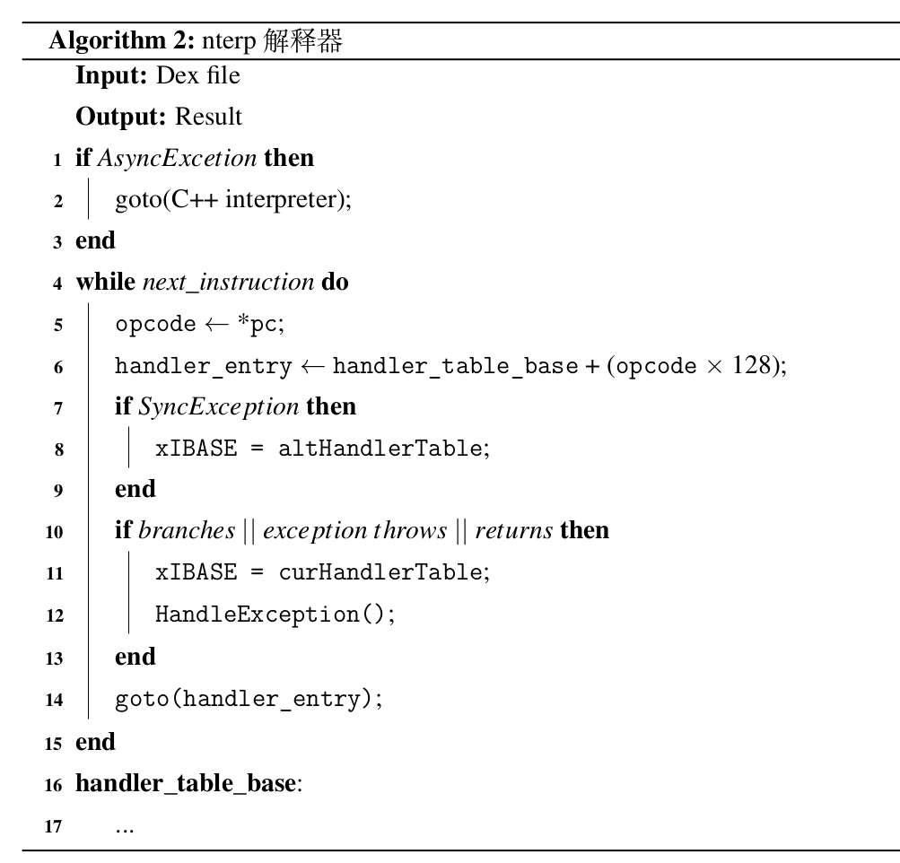 </div> </div> <!--v--> ## 安卓运行时 <span style="font-size: 0.8em;">💡 解释器：C++ vs nterp benchmark (CaffeineMark)</span><p> <div style="text-align: center;"> 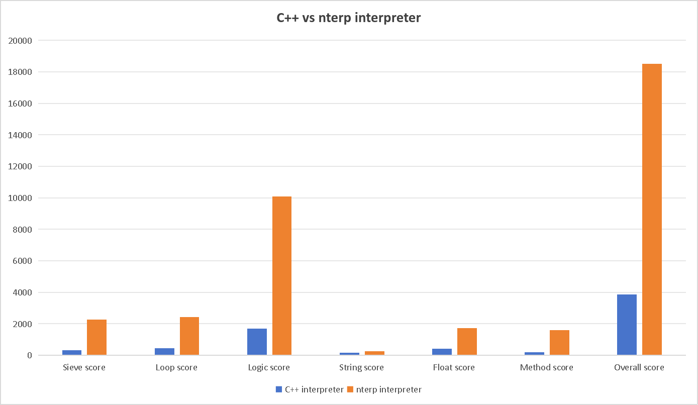 </div> <!--v--> ## 安卓运行时 <div class="mul-cols"> <div class="col"> <span style="font-size: 0.7em;">💡 mterp栈帧(Android7.0-Android14)</span><p> <div style="text-align: center;"> <img src="mterp_stack.png" width="90%" style="margin: 0 auto;"> </div> </div> <div class="col"> <span style="font-size: 0.7em;">💡 nterp栈帧(Android15.0-)</span><p> <div style="text-align: center;"> 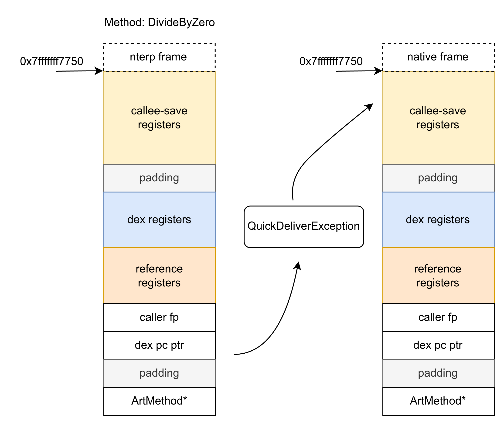 </div> </div> <!--v--> ## 安卓运行时 <span style="font-size: 0.8em;">💡 JIT/AOT编译器</span><p> ```bash Java Method -> HIR -> HGraph -> HBlock -> HIR -> Assembly ``` <div style="text-align: center;"> <br/> <img src="codegen_framework.png" width="100%" style="margin: 0 auto;"> </div> <!--s--> <div class="middle center"> <div style="width: 100%"> # Part.3 <hr/> AOSP移植实践 </div> </div> <!--v--> ## 移植实践 <span style="font-size: 0.8em;">✅ 153个仓库</span><p> <span style="font-size: 0.8em;">✅ https://github.com/orgs/android-la64/repositories</span><p> <span style="font-size: 0.8em;">✅ http://8.140.33.210:2280</span><p> <span style="font-size: 0.8em;">📌 一些改动</span><p> |repository | change | |:--:|:--:| |Bionic12| 273 files changed, 5530 insertions(+), 3067 deletions(-)| |Bionic15| 293 files changed, 6052 insertions(+), 3036 deletions(-)| |Android Runtime12| 98 files changed, 21275 insertions(+), 403 deletions(-)| |Android Runtime15| 23 files changed, 6837 insertions(+), 252 deletions(-)| <!--v--> ## 移植实践 <div class="mul-cols"> <div class="col"> <span style="font-size: 0.8em;">✅ Linux内核</span><p> <span style="font-size: 0.8em;">✅ 编译系统</span><p> <span style="font-size: 0.8em;">✅ 工具链</span><p> <span style="font-size: 0.8em;">✅ clang</span><p> <span style="font-size: 0.8em;">✅ NDK</span><p> <span style="font-size: 0.8em;">🛠️ Rust</span><p> <span style="font-size: 0.8em;">✅ Bionic</span><p> <span style="font-size: 0.8em;">✅ Graphic</span><p> </div> <div class="col"> <span style="font-size: 0.8em;">✅ Android Runtime</span><p> <span style="font-size: 0.8em;">✅ C++ interpreter</span><p> <span style="font-size: 0.8em;">✅ nterp interpreter</span><p> <span style="font-size: 0.8em;">✅ JIT/AOT compiler</span><p> 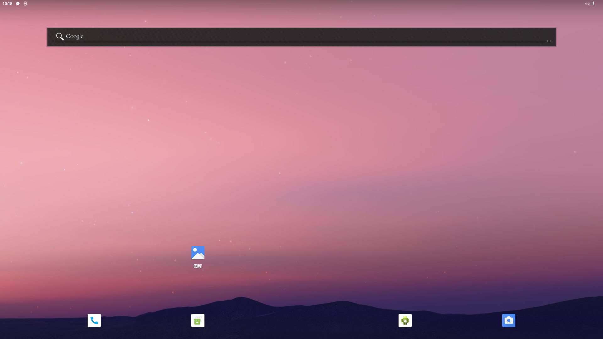 </div> <!--v--> ## 移植实践 <div class="mul-cols"> <div class="col"> - 图形重定向 <div style="text-align: center;"> 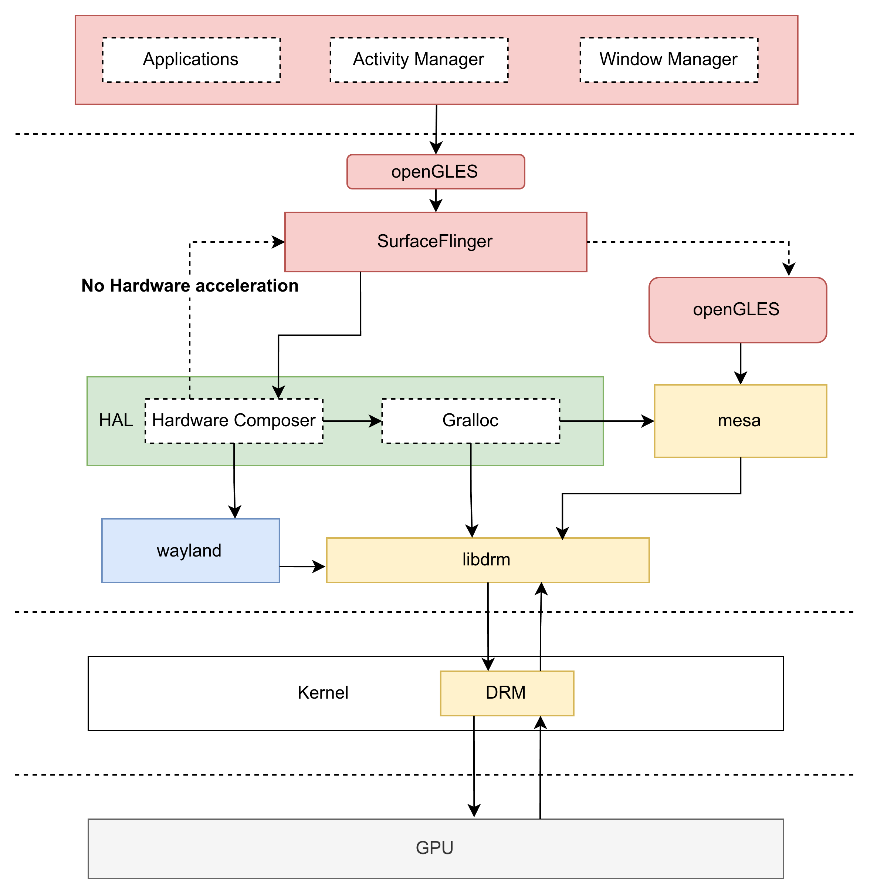 </div> </div> <div class="col"> - 容器化安卓 <br> <br> <br> 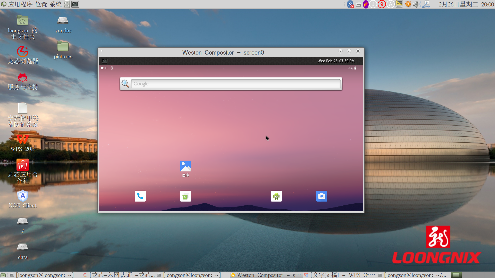 </div> <!--v--> ## 移植实践 - PPT地址：https://baibaidashixiong.github.io/porting-android-la64 - 项目文档：https://github.com/android-la64/docs - TODO: - CTS兼容测试套件 - 结构标准化 - 优化 - ... <div class=" center"> <div style="width: 100%"> <hr> 欢迎加入！ </div> </div>